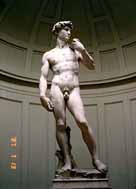

３１．「え？日本製の焼付け機。日本人でも出来ないのに。」(写真有)
エジプトに来て初めの頃に写真の現像とプリントに出すと、キズは付けられるし色は茶色っぽくなる。
そんなある日綺麗にプリントする店を見つけた。自分で撮った写真で気に入った同じ物を何回か焼き増ししてもらった。
ここで気が付いたのが毎回同じ色調で出来上がってくるのである、日本では無理に近い、なのにここエジプトのこの店で
は可能である。機械を覗く、MADE IN JAPAN IMAGICAと書かれている、あぁやっぱり日本製と思った。次の瞬間、え？
日本製？とびっくりしてしまった。
帰国後、写真屋を回る。機械を見せてもらい色調補正が出来るかどうか確認する。どの店も嫌な顔をする、色調補正、
保守点検を知らないのである。やっと見つけた店がある、そこの写真屋はラボ出身で色調補正を出来る人であった。確か
に毎回ほぼ同じ色調でプリントしてくれた。でも日本人の好みとして青っぽくなるので、何時も青みを消してもらってい
ました。

処で色調補正を出来るかどうかの確認方法はプリントの裏に５〜８桁の英数字が書かれていれば、そこでは出来る機械
を使っています。店員が色調補正を出来るかどうかは別問題ですが。フォトショップを使っている人ならこの色調補正の
難しさが分かりますよね。
左の写真が何度焼き増ししても同じ色調で出来上がり驚きました。
その後店員に致命的な傷を付けられてしまった。
|